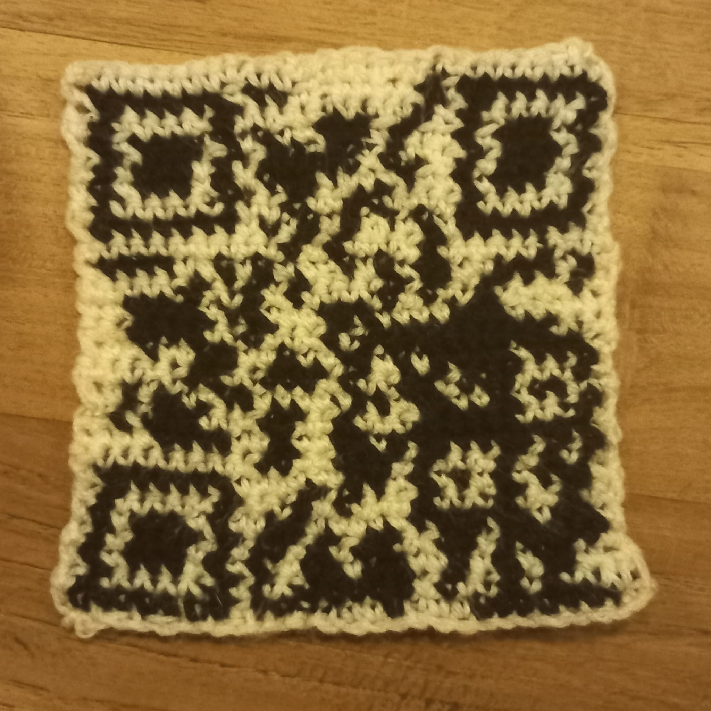
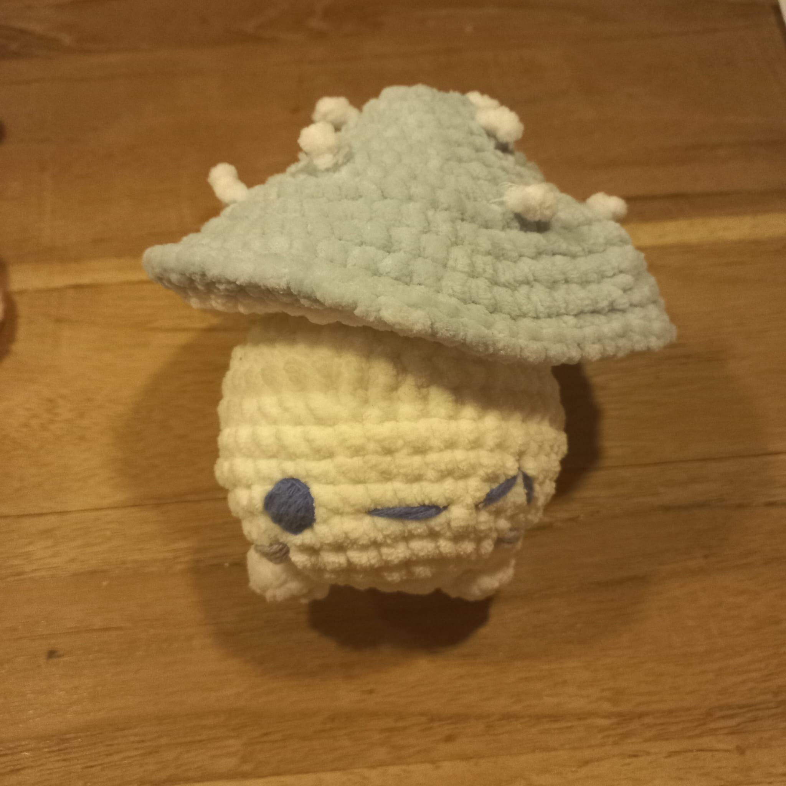
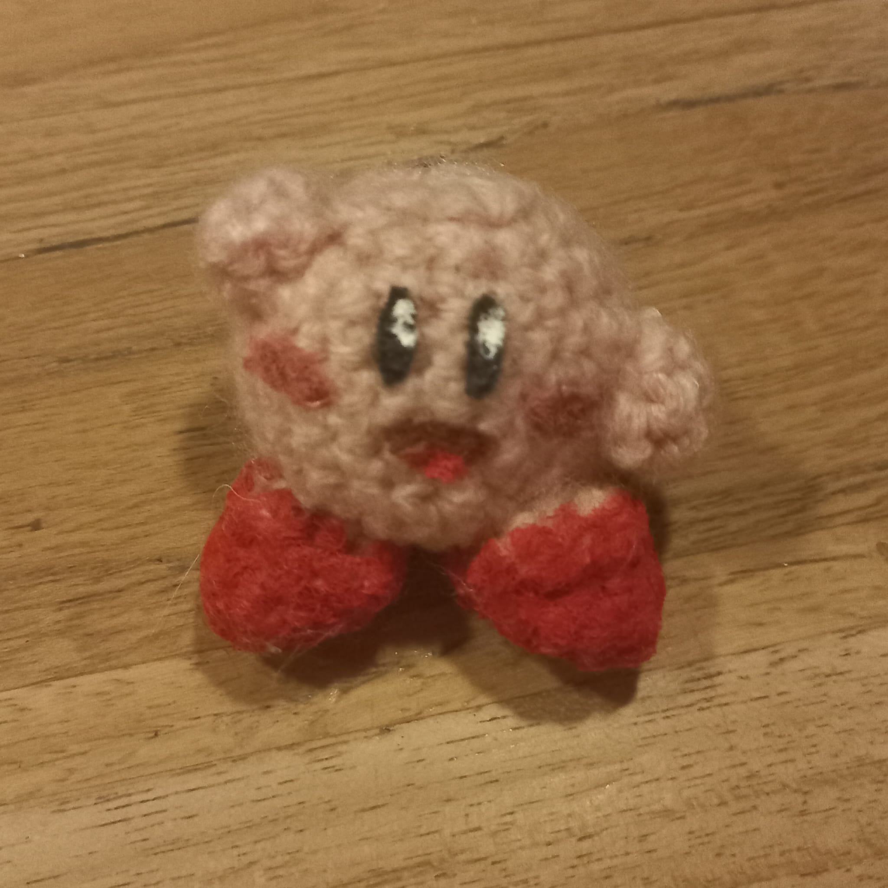
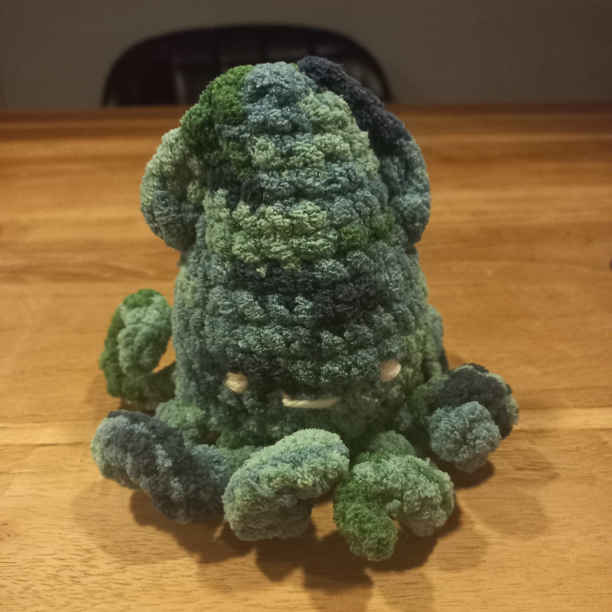
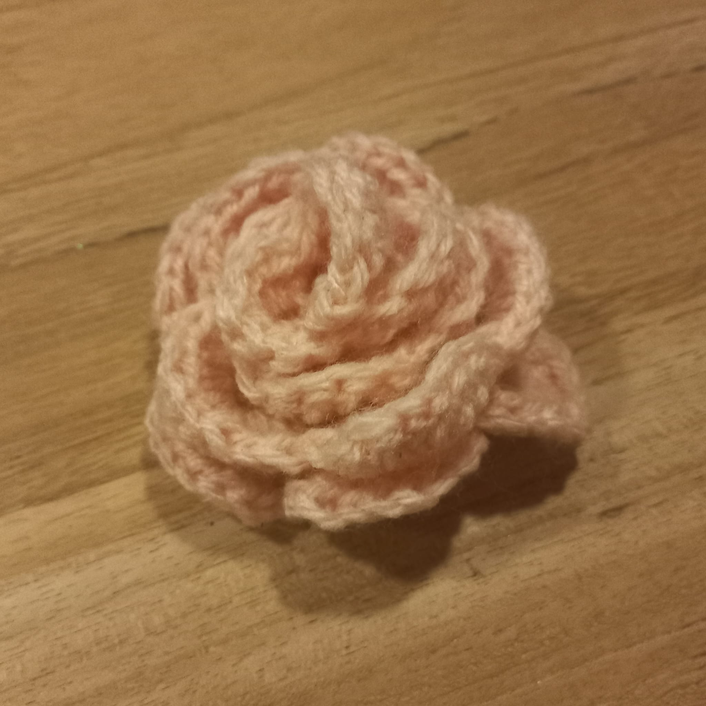
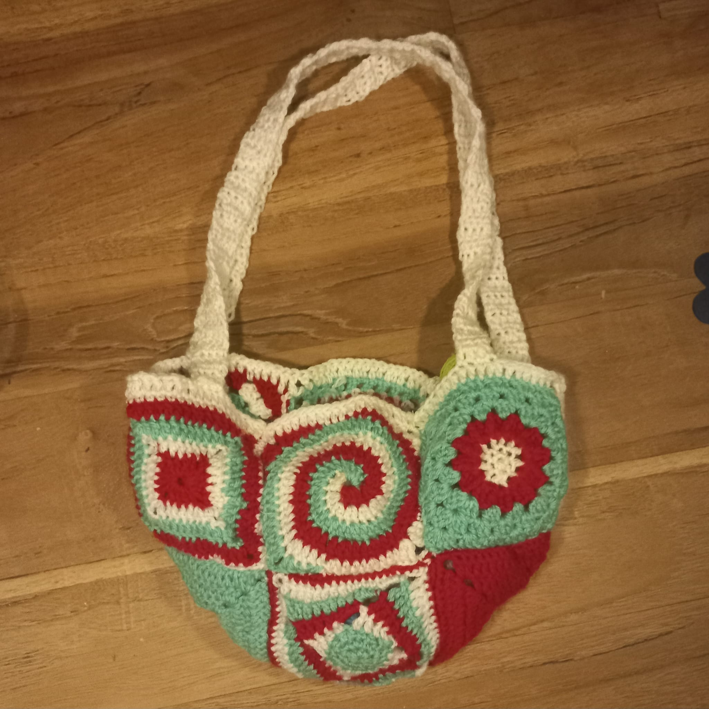

My Projects
These are some of the products I've been working on! Some of them are not finished yet, but I felt like I should show them anyways!
Baby Yoda
This project was very fun to make, but it was pretty difficult to figure out how many stitches I needed for the robe, because every yarn has a different stretch and thickness. I needed a few tries for it to fit well, bit it was worth it in the end! I give it an 8/10.
QR-Code
This was one of the first tapestry crochet projects I've made. It was very fun to make and i really reccomend it! Sadly enough, my stitches were not percice enough for it to actually work. I give it a 7/10.
Adjustable mushroom
This project was the first one ive made with fluffy yarn, I absolutely loved the way it felt, it was surprisingly easy as well! I've stuffed the plush in a way so its hat is still adjustable, its very cute! I give it a 9/10!
Kirby
For this project, I only used pink yarn, younger me thought it was a great idea to just paint his red shoes and his facial features on afterwards. That really didnt work out.. It was a mess and I definitely don't reccomend doing that. I give it a 3/10...
Fluffy squid
This squid has stolen my heart, it turned out really cute and the yarn was amazing to work with. The colors, the fluffyness, the size, the embroidered face, everything is amazing! This is definately my favorite project so far, 10/10!
Rose
This rose was one of, if not the first project ive made. It was a present for my mom! Because it was my first time crocheting, ive had some struggles, but looking back on it it really shouldn't have been that difficult. I give it a 6/10.
Tricolored bag
This bag was a time consuming project.. I needed to make ten different granny sqares! I do love the final product a lot though! and it was still very fun to make. I give it an 8/10!